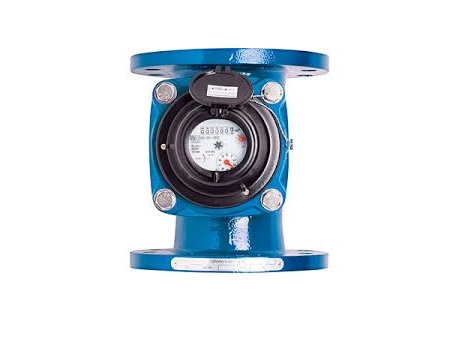

Servicios

Telemetría para Caudalimetros
Registro de consumo en tiempo real y visualización en su plataforma
Sistemas de monitoreo de temperaturas
Registro de temperaturas de su cultivo y visualización en su plataforma

Sistemas de monitoreo nivel de pozo y estanques
Registro en tiempo real de nivel de pozos y estanques , visualización en su plataforma

Sistema de control para luces
Control y monitoreo de luces o alarmas

Control y monitoreo de Válvulas
Sistemas de control para apertura y corte de riego

Riego Técnificado Áreas Verdes
Sistema de aspersores ideal para areas verdes

Riego Técnificado Arboles
Sistemas de riego por goteo ideal para parcelas de arboles
Riego Técnificado Hortalizas
Sistemas de riego mediante cinta de riego ideal para parcelas de hortalizas